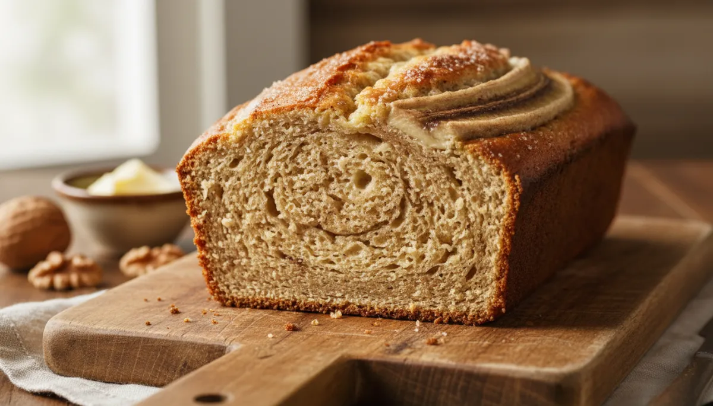

Mastering the Moist: Chef Galot's Ultimate Banana Bread

The Science of Superior Softness: Your Quest for the Perfect Banana Bread Ends Here.
Forget the dry, crumbly imposters. This is not just another banana bread recipe; it is a meticulously engineered blueprint for unparalleled moisture, tender crumb, and profound banana flavor. Through a precise combination of ingredients and technique, we will create a banana bread that not only rivals but distinctly surpasses the mass-produced versions, delivering a consistently superior product straight from your oven. Prepare to redefine your expectations.
🧬 Chef’s Corner
- Banana Ripeness: The Maillard Catalyst : The transformation of starch into sugar during banana ripening is crucial. Overripe bananas (darkly speckled, almost black) provide not only intense sweetness but also a higher moisture content and complex flavor precursors essential for caramelization (Maillard reaction) during baking, contributing to a deeper color and aroma.
- Acid-Base Reaction: The Tender Lift : The combination of buttermilk (an acid) with baking soda (a base) creates carbon dioxide gas, providing lift and a tender crumb. Baking powder, a double-acting leavener, offers additional lift both when wet and when heated, ensuring consistent aeration throughout the loaf.
- Oil’s Role in Moisture Retention : Unlike butter, which contains water and milk solids that can evaporate during baking, neutral oil is 100% fat. This fat coats flour particles, inhibiting gluten development and contributing to a consistently moist and tender texture that stays fresh longer, without the risk of drying out.
- Gluten Management: The Gentle Fold : Overmixing the batter develops gluten, leading to a tough, chewy bread. Our objective is minimal mixing, just enough to incorporate the dry ingredients. This scientific approach ensures the gluten network remains short and relaxed, resulting in a supremely tender crumb.
🔪 Essential Equipment
- Digital Scale : For precise measurement of dry ingredients. Baking is chemistry; accuracy is paramount for consistent results.
- Large Mixing Bowls (x2) : To keep wet and dry ingredients separate until the optimal moment of combination, preventing premature reactions.
- Whisk : For thoroughly combining dry ingredients and aerating wet ingredients, ensuring even distribution.
- Rubber Spatula : Indispensable for gentle folding, minimizing gluten development, and scraping down the sides of the bowl efficiently.
- 9x5-inch Loaf Pan : The standard dimension for optimal heat distribution and loaf structure. A lightly colored metal pan is preferred for even browning.
📋 Ingredients (For 10 Servings)
- Very Ripe Bananas : 3 large (approx. 350g), mashed (the darker, the better for flavor and moisture).
- All-Purpose Flour : 250g (2 cups), sifted.
- Granulated Sugar : 100g (½ cup).
- Light Brown Sugar (packed) : 75g (⅓ cup).
- Large Eggs : 2, at room temperature.
- Neutral Oil (canola, vegetable, grapeseed) : 120ml (½ cup).
- Buttermilk : 60ml (¼ cup), at room temperature (or substitute: 60ml milk + ½ tsp lemon juice/white vinegar, let stand 5 min).
- Baking Soda : 1 teaspoon.
- Baking Powder : ½ teaspoon.
- Fine Sea Salt : ½ teaspoon.
- Vanilla Extract : 1 teaspoon.
- Chocolate Chips (optional) : 100g (⅔ cup), for an added layer of indulgence.
👩🍳 Method
Step 1: The Foundation – Mashing and Emulsifying Wet Components
Preheat your oven to 175°C (350°F). Lightly grease and flour a 9x5-inch loaf pan, or line it with parchment paper for easy removal. In a large bowl, thoroughly mash the very ripe bananas until mostly smooth with a few small lumps remaining. Incorporate the neutral oil, granulated sugar, brown sugar, room temperature eggs, buttermilk, and vanilla extract. Whisk vigorously for 1-2 minutes until the mixture is well emulsified and homogenous. The sugars should be mostly dissolved.
Step 2: The Structure – Dry Integration and Gentle Combination
In a separate medium bowl, whisk together the sifted all-purpose flour, baking soda, baking powder, and fine sea salt. This ensures even distribution of the leavening agents. Gradually add the dry ingredient mixture to the wet banana mixture, folding gently with a rubber spatula. Mix only until no streaks of dry flour remain. Overmixing will develop gluten, leading to a tough texture. If using, gently fold in the chocolate chips at this stage.
Step 3: The Transformation – Baking to Perfection
Pour the batter evenly into the prepared loaf pan. Bake for 55-65 minutes, or until a wooden skewer or toothpick inserted into the center comes out clean or with only a few moist crumbs attached. Begin checking for doneness around the 50-minute mark. If the top begins to brown too quickly, tent loosely with aluminum foil.
Step 4: The Revelation – Cooling and Serving Protocol
Once baked, remove the loaf pan from the oven and allow the banana bread to cool in the pan for 10-15 minutes. This crucial resting period allows the internal structure to set and prevents crumbling. Carefully invert the loaf onto a wire rack to cool completely. Slicing while warm is permissible for immediate gratification, but a fully cooled loaf yields cleaner slices and allows the flavors to meld.
💡 Chef’s Tip
To achieve an even more pronounced banana flavor and superior moisture, consider preparing the batter and allowing it to rest in the refrigerator for 12-24 hours before baking. This “cold fermentation” allows the flour to fully hydrate, the flavors to deepen, and the leavening agents to activate more effectively, resulting in an exceptionally tender and flavorful loaf.
🍷 Pairing Suggestions
This Ultimate Moist Banana Bread pairs exquisitely with a robust cup of freshly brewed coffee, a comforting Earl Grey tea, or a simple glass of cold milk. For an elevated experience, consider a dollop of crème fraîche or a light dusting of powdered sugar.
🥗 Nutrition
- Calories : ~420 kcal per serving (based on 10 servings).
- Advice : While delicious, this is an indulgent treat. Enjoy in moderation as part of a balanced nutritional intake. Consider pairing with fresh fruit or a protein source for a more complete snack.
❓ FAQ
- Can I use less ripe bananas ? While possible, it’s not recommended. Less ripe bananas yield less sweetness, moisture, and banana flavor. For optimal results, wait for those dark spots!
- What if I don’t have buttermilk ? Combine 60ml (¼ cup) of regular milk with ½ teaspoon of lemon juice or white vinegar. Let it sit for 5 minutes until it slightly curdles, then proceed with the recipe.
- How should I store the banana bread ? Store completely cooled banana bread tightly wrapped in plastic wrap or in an airtight container at room temperature for up to 3-4 days. For longer storage, freeze individual slices wrapped in plastic wrap and then foil for up to 3 months.
- Why is my banana bread dry ? The most common culprits are overmixing the batter (developing too much gluten) or overbaking. Ensure you follow the mixing instructions precisely and check for doneness at the earliest recommended time.
📖 The Ultimate Moist Banana Bread (Better Than Starbucks)
🛒 Ingredients
- • 3 large (approx. 350g) very ripe bananas, mashed
- • 250g (2 cups) all-purpose flour, sifted
- • 100g (½ cup) granulated sugar
- • 75g (⅓ cup) light brown sugar, packed
- • 2 large eggs, at room temperature
- • 120ml (½ cup) neutral oil (canola, vegetable, grapeseed)
- • 60ml (¼ cup) buttermilk, at room temperature (or milk + ½ tsp lemon juice/vinegar)
- • 1 teaspoon baking soda
- • ½ teaspoon baking powder
- • ½ teaspoon fine sea salt
- • 1 teaspoon vanilla extract
- • 100g (⅔ cup) chocolate chips (optional)
👩🍳 Instructions
📸 Galerie Photos